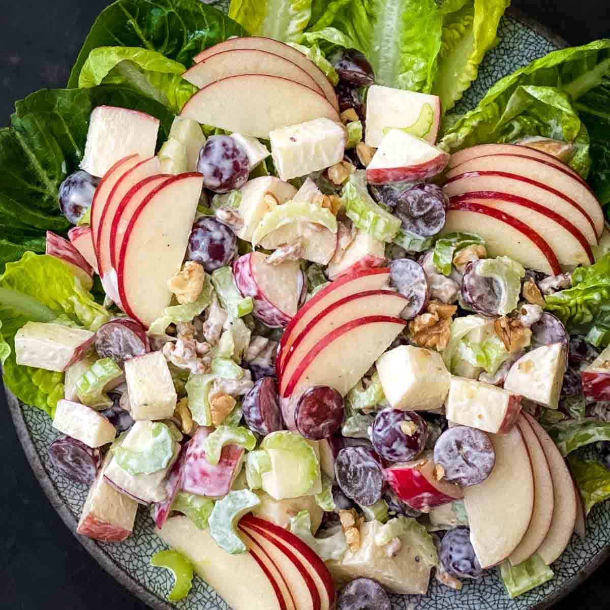

Waldorf Salad

Description
Imagine a salad that’s crisp, refreshing, and bursting with flavor. It’s got a bit of sweetness, a bit of tartness, and a whole lot of crunch. That’s the Waldorf salad for you, and it›s a classic for a reason.
Ingredients
- 2 apples, cored and diced
- 1 celery stalk, diced
- 1/2 cup walnuts, chopped
- 1/2 cup grapes, halved
Dressing
- 1/4 cup mayonnaise
- 2 tablespoons lemon juice
- Salt and pepper to taste
Steps
- In a large bowl, combine the apples, celery, walnuts, and grapes.
- For the dressing, whisk together the mayonnaise, lemon juice, salt, and pepper in a smaller bowl.
- Pour the dressing over the salad and toss to coat.
- Serve immediately or chill for later.
Go Back